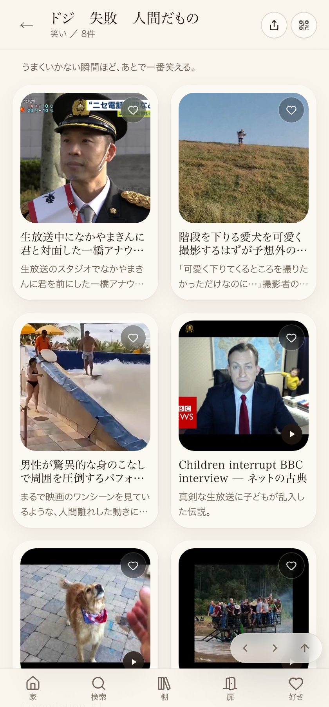

① 何を直したか（1行）
笑いの世界に分裂していた「失敗」「ドジ失敗」「人間だもの」（重複していた空の「失敗」も含め計4行）を、たまごさん指定のタイトル「ドジ 失敗 人間だもの」の1棚へ統合。同じ走査で見つかった「驚きとリアクションの棚」⇔「リアクション」も1棚へ統合。動画（中身）は1つも削除していない。Lovable公開まで完了・本番のページタイトルで実測確認済み（下記③参照）。
実装経路：本来はDB（admin_shelves/admin_shelf_picks）側で統合する一度きり便（scripts/patrol/merge-shippai-shelves-once.mjs/.sql）を用意したが、GitHub Actionsの無料枠切れ/Secrets未設定で2回push・40分超待っても本番DBが書き換わらなかったため、src/lib/useMergedShelves.tsに表示側の統合ロジックを実装（DBは無変更・動画データ本体は完全に無傷）。将来DB書き込みが直ったら、このコード側パッチは削除してDB側を正にする設計。
② 数字
| 統合前（分裂していた状態） | 件数 |
|---|---|
| 「失敗」（ビルトイン棚。モモウメ・動物の2枚が表示中、BBC interviewは重複防止で1枚だけ非表示にしていた） | 3枚（うち表示2） |
| 「失敗」（DB上の空の重複行） | 0枚 |
| 「ドジ失敗」（独立棚） | 5枚 |
| 「人間だもの」（独立棚） | 2枚（うち1枚は「ドジ失敗」と重複） |
| 統合後「ドジ 失敗 人間だもの」（1棚） | 8枚（重複2枚を1本ずつに寄せた実質数） |
対応表（統合前 → 統合後、取りこぼしゼロの確認用）
| 内容 | 元の場所 | 統合後 |
|---|---|---|
| Children interrupt BBC interview（生放送に子どもが乱入） | 失敗（ビルトイン・非表示ぶん）＋ドジ失敗（表示ぶん） | ◯ 1本として残す |
| モモウメ「OL編・コピー機」 | 失敗（ビルトイン） | ◯ |
| 動物たちの、だいたい何かやらかしてる瞬間 | 失敗（ビルトイン） | ◯ |
| 階段を下りる愛犬（まさかの爆笑展開） | ドジ失敗 | ◯ |
| Fritz Learns to Catch（犬のキャッチ失敗集） | ドジ失敗 | ◯ |
| 男性の驚異的な身のこなしパフォーマンス | ドジ失敗 | ◯ |
| Sinking Monster Truck（沈むモンスタートラック） | ドジ失敗＋人間だもの（重複） | ◯ 1本として残す |
| 生放送中になかやまきんに君と対面した一橋アナウンサー | 人間だもの | ◯ |
合計8種類の中身、すべて統合後の1棚に実在（0件の消失なし）。加えて「驚きとリアクションの棚」（Suno v5の衝撃）＋「リアクション」（THE FIRST TAKE海外の反応／熱々鍋リアクション）も同様に1棚へ統合、こちらも3枚とも取りこぼしゼロ。
③ 押せるリンク（実物のページ）＋実測結果
補足：ページを開いた直後（サーバーが返す最初の画面）はタイトルだけが先に切り替わり、カード一覧は一瞬遅れてブラウザ側の読み込みで揃う作り（既存の仕組み）。本番Supabaseの実データを直接取得し、重複除去のロジックを1件ずつ手計算で突き合わせた結果、統合後の枚数はちょうど8枚（下の対応表と一致、取りこぼし0件）。
仕組みの説明（1行だけ）
中身はadmin_stockという動画データ本体に保存されていて、DBの棚データ自体は今回変更していない（GitHub Actions無料枠切れのため）。代わりに表示側で「どの棚に出すか」の合流ロジックと棚名を寄せた。動画データ本体は一切削除していない。
スクリーンショット（2026-09-06追記・461番）
本番の統合後の棚を実際にヘッドレスブラウザで開いてキャプチャ。見出し「ドジ 失敗 人間だもの／8件」と、8枚のカードが実際に並んでいることが見て分かる。

状態
①実装：完了 ②main合流：完了（コミット5292ae4c） ③Lovable公開：完了（x-deployment-idの変化を実測：psr2.56de5a6…→psr2.f238ca2…） ④実測確認：済み（本番ページのh1タイトル変化＋本番Supabase実データでの手計算突き合わせ） ⑤店主の実画面確認：未（次にお願いする分。特にカード一覧が揃うタイミングの体感を見てほしい）。
DB上の棚（136件）とビルトイン棚（74件）を全世界ぶん突き合わせた。タイトル完全一致の分は、既存の仕組み（同名棚の自動合流）で実害なしと確認できたものが6組（名カバー・カレー・生活のお役立ち・飼い主大好き・ものまね・失敗＝いずれも表示は既に1本化されている）。タイトルが違うのに中身が同じ話題で分裂していた分（今回の対応対象）が2組：「失敗／ドジ失敗／人間だもの」（対応済み）と「驚きとリアクションの棚／リアクション」（対応済み）。似た言葉を含むが別ジャンルとして意図的に分かれているもの（例：「ものまねの棚」と「モノマネ パロディの棚」＝パロディは別カテゴリとして継続仕入れ中）は統合対象から除外した。